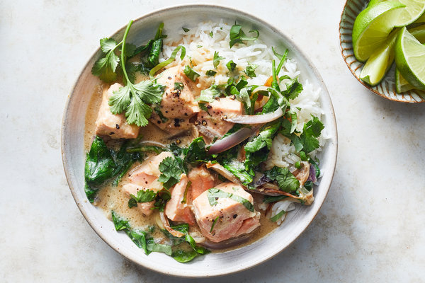

Salmon Miso Curry

About the dish
This delicious dish is perfect for an easy weeknight meal.
Coconut milk with a roasted white miso makes for a delicous sauce full of umami.
Wow your friends with this simple yet delicatble fusion dish!
Ingredients
- Coconut Milk - 1 can / 400ml
- 2 filets of salmon
- 2 tablespoons of miso
- 2 small shallots
- cilantro
- 2 tablespoons of lime juice
- 2 tablespoons of oil
- Spinach
- Heat oil in a frying pan. While that is warmin up, thinly slice your shallots.
Put the shallots into the oil. Stir until camralized, about 10 minutes.
- Once the shallots are carmalized, put in the miso. Cook for 3-5 minutes
- After the miso is carmalized, put in one can of coconut milk and half a can of water.
Cook until reduced by half.
- After curry is reduced, add in the salmon. Cook for 5 minutes
- Insert spinach right before serving. Top with lime juice and cilantro. Serve with rice.